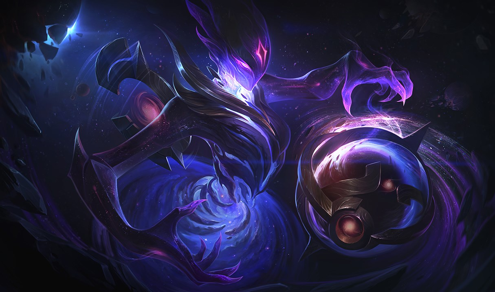

Orianna is a technical marvel comprised entirely of clockwork, but it was not always so - she was once a girl of flesh and blood. As a young child in Piltover, Orianna fell ill, and her dying organs were replaced with elaborate prosthetics
until she became the first fully mechanized person. Her closest companion is the mechanical ball she created to serve as her protector and friend. Introspective and curious about her place in the world, Orianna seeks her true purpose.
Growing
up in a wealthy district of Piltover, Orianna was sheltered from the cruelties and injustices of the outside world by her father, renowned inventor Corin Reveck. His elaborate designs were so beautifully detailed that even those
without a medical need sought his clockwork and mechanically powered augmentations. Patrons swore his work had an uncannily lifelike quality, as if he wove magic into his creations amongst the cogs and gears.
Eager to learn his craft,
young Orianna trained tirelessly as his apprentice. Her father was brilliant, but reclusive, and relied on Orianna to interact with his customers. With her inquisitive and friendly nature, she soon became the face of
their business.
Though she seldom ventured beyond her neighborhood, Orianna often stole away to the theater, where she watched dancers portray stories through leaps and pirouettes from lands beyond Piltover. Epic adventures unfolded
before her eyes: an
ageless mage who wandered the desert in search of a spell he'd lost a century ago, a maiden who disguised herself as a rock in a magic-infused jungle, a pilgrim who longed to climb an impossibly tall mountain that healed all who ascended its
peak, and dozens more stories of faraway places that thrilled her imagination.
Entranced by the dancers’ tales, Orianna dreamed of one day visiting these strange and distant lands. From the theater balcony, she’d study every movement
and detail, then return to her father’s workshop to create miniature figurines that
recreated the dazzling show.
One quiet day in the shop, after Orianna fitted an elderly woman’s mechanical hand, the patient mentioned a terrible accident that had occurred in Zaun, the city over which Piltover had been built. An
explosion had released a cloud of noxious
fumes, poisoning the air in the surrounding streets. Left untreated, the chemicals would cause organ failure and a slow, lingering death. Those infected were sequestered to a medical encampment in the heart of Zaun.
Thinking their
skills could help those suffering from the foul air, Orianna urged her father to descend into Zaun and aid the victims. Corin knew exposure to such toxicity was too risky and forbade his daughter from visiting such a dangerous
place. But Orianna was not to be dissuaded, and just before dawn, she snuck from her home. She bore as many respirators as she could carry, and donned a protective mask before riding the hexdraulic descender into the depths of Zaun.
Orianna
was shocked at the devastation; debris filled the streets at the site of the explosion, and Zaunites walked through thick pooling clouds of toxins with their faces covered by no more than oily rags. Never in her life had she witnessed
such suffering. Orianna joined a group of volunteers tending to those most affected by the fumes. She returned, night after night, to repair broken breathing equipment and install esophilters in her patients, allowing them to breathe the
noxious fumes safely.
After giving away all her respirators, Orianna noticed a young child with deathly, labored breathing. Without a second thought, she removed her own filtration mask and gave it to the child, donning a handkerchief
to cover her own face. Within
days Orianna fell ill herself, and soon struggled to breathe even the clean air of her home. Every breath was anguish as her lungs deteriorated from within, and she was forced to face her own mortality.
Devastated at his daughter’s
failing health, Corin threw all his efforts into developing his most ambitious project yet: replacing Orianna’s dissolving lungs with automated replicas. Corin used the finest bio-mechanical filtration materials,
normally reserved for his highest paying customers. After weeks of sleepless nights developing an exquisite device of clockwork, Corin embedded it within Orianna’s chest. Wanting to prevent Orianna from exposing herself to danger again, Corin
installed a mechanism to power her lungs with a key only he could wind. The artificial lungs worked perfectly, and soon Orianna was back to tinkering in the shop.
Sadly, Orianna’s fortune would not last. After a few months of good
health, her condition worsened as the blight spread to the rest of her body. Orianna and her father worked feverishly to develop clockwork replicas of various organs, and as
each body part failed, it was replaced.
As her anatomy was inexorably altered, Orianna grew more uncertain of her own identity. Over time, more and more of her body was exchanged for whirring cogs and gears. She retained most of her
human memories, but felt a peculiar distance from
her former self. Her father, too, noticed the change; Orianna sometimes heard him crying late at night. He bought her tickets to the Piltovan theater to cheer her up, but Orianna insisted on leaving halfway through, saying she had already
learned everything she could from the show. Devastated at the gradual loss of his daughter’s personality, Corin tried to help Orianna recall her old memories and former demeanor, correcting her when she strayed too far from her past behavior.
Orianna followed his instructions, but increasingly grew to resent his interference, wishing she could simply be herself.
Within a year, Orianna was almost entirely mechanical, save for her heart, which remained miraculously untainted
by the creeping toxins.
During the years of Orianna’s decline, Corin had focused solely on his daughter, neglecting many of his wealthy clientele, and losing most of their patronage. Without funds to keep their business afloat, Orianna
and Corin were forced to sell what possessions they could and move down into Zaun. They set up shop above a chemtech lab halfway down the canyon wall, and soon found work modifying breathing devices to filter the infamous Zaun Gray.
Orianna’s
skill in crafting mechanized clockwork was better than ever, for her hands no longer tired under the meticulous work and her inhuman mind needed little rest. She had no need for measuring devices, for she could glance at a gear and
immediately know its exact dimensions, and was able to solve complex formulas that would normally take hours in a matter of seconds. Orianna learned to maintain her own body, greasing cranks, replacing worn parts, and fixing jammed clockwork
as needed, though she relied on her father to wind her whenever her gears slowed.
With wheels and gears ticking endlessly within her body, Orianna often became frustrated that time never seemed to move forward - at least not for her. As
the months passed, new creases appeared on her father’s forehead and gray hairs grew at
his temples. But Orianna’s gears maintained their constant rotation, and she experienced little change. She wondered if her life would continue forever on its steady, immutable course, and felt the loss of all the things she might never
experience.
With most Zaunites accustomed to breathing chem-rich air, people visited Corin’s workshop only occasionally, and business slowed. Compounding that problem, Corin had developed agonizing chest spasms since their move to Zaun
and was forced to
rest often.
One day, Orianna noticed a young sumpsnipe who frequently passed their shop, and spent an afternoon crafting a mechanical figurine for him. The tiny clockwork gentleman tipped his hat and bowed when his key was wound. The
child was delighted.
Thinking that life in Zaun could use more joy, Orianna designed a series of elaborate figurines. In a place where most objects were purely functional, her wondrous creations brought smiles to many Zaunites. The figures sold faster than she
could make them, and the renown of Corin’s workshop grew. Once again, they could afford more expensive materials, even a rare hextech crystal.
With notoriety came more visitors, but not all of them were welcome. Thugs employed by Petrok
Grime, a formidable Chem-Baron, stopped by one day to offer Corin their unwavering protection from thieves, scoundrels, and general mayhem in
exchange for coin. Corin turned them down, believing it better to stand up to criminals than appease them. But that night, Corin’s shop was raided and all their money was stolen. Orianna spent the next month developing a tool to serve as their
protector: a brass sphere that could radiate powerful energy, causing its target tremendous pain. Corin noticed that the ball assisted Orianna in her work automatically, as if they had some unseen connection.
As Corin’s health continued
to deteriorate, Orianna was forced to obtain costly tonics to treat his pain. She tended to him as best she could, but a Zaunite sawbones confirmed that the chem-rich air had infiltrated Corin’s bloodstream and
poisoned his heart.
Despite their advancements in bio-mechanical clockwork, neither Corin nor Orianna had yet developed a mechanism elaborate enough to reproduce the intricacies of the human heart. Her own live, healthy heart had proven
especially resilient
throughout her illness. Yet it was also an unbreakable link to her past, freezing her in time.
Orianna knew her father loved the daughter he once had, but she no longer felt like that girl. Perhaps giving her heart to her father would
keep his daughter’s memory alive, since she no longer could. If she could create a mechanical heart for
herself powered by hextech, her lungs would no longer need a winding key. Maybe then, time could move forward.
Orianna slipped her father a sleeping draught and crafted her new clockwork heart using the hextech crystal they recently
obtained. The bespoke organ hummed with delicate machinery that drew power from the ever-renewing gemstone. It was beyond
the scope of anything she or her father had ever created. With help from the ball, she removed the key from her back and installed the new device, knowing her hextech-powered heartbeat would never again depend on someone else. She then cut
open Corin’s chest and replaced his failing heart with the last remnant of the Orianna he had known and loved.
Orianna listened to her father’s steady heartbeat through the night, and at dawn, she left for good. Though she still loved
him, she wanted to see the world. She had become something entirely new, a lady of clockwork, and now that she was
entirely mechanical, she was free.
Corin woke to find his workshop filled with hundreds of miniature figurines: clockwork people who could balance upon a string, sing folk tunes, or even juggle tiny silver balls. With such a rich
inventory he could return to Piltover in no
time. But there was one figure he vowed never to sell: a golden dancer with no winding key, who pirouetted in a dance without end.

Abilities
Clockwork Windup
Orianna's autoattack deals additional magic damage. This damage increases the more Orianna attacks the same target.
Command: Attack
Cost: 30/35/40/45/50 Mana
Range: 815
Orianna commands her Ball to fire toward a target location, dealing magic damage to targets along the way (deals less damage to subsequent targets). Her Ball remains at the target location after.
Orianna commands her Ball to shoot toward a target location, dealing 60/90/120/150/180 (+50% Ability Power) magic damage to targets along the way. However, it deals 10% less damage for each unit it hits (Minimum 40%).Her Ball remains behind
at the target location afterwards.
Command: Dissonance
Cost: 70/80/90/100/110 Mana
Range: 255
Orianna commands the Ball to release a pulse of energy, dealing magic damage around it. This leaves a field behind that speeds up allies and slows enemies.
Orianna commands her Ball to release an electric pulse, dealing 60/105/150/195/240 (+70% Ability Power) magic damage to nearby enemies.The pulse leaves behind an energy field for 3 seconds, lowering enemy Movement Speed by 20/25/30/35/40%
and increasing ally Movement Speed by 20/25/30/35/40% for 2 seconds. This effect diminishes over time.
Command: Protect
Cost: 60 Mana
Range: 1095
Orianna commands her Ball to attach to an allied champion, shielding them and dealing magic damage to any enemies it passes through on the way. Additionally, the Ball grants additional Armor and Magic Resist to the champion it is attached
to.
Passive: The Ball adds 10/15/20/25/30 Armor and Magic Resist to the allied champion it is attached to.
Active: Orianna commands her Ball to travel to and attach onto an allied champion, shielding them for 2.5 seconds from the next 60/100/140/180/220 (+40% Ability Power) damage. Enemies the Ball passes through along the way are damaged for
60/90/120/150/180 (+30% Ability Power) magic damage.
Command: Shockwave
Cost: 100 Mana
Range: 410
Orianna commands her Ball to unleash a shockwave, dealing magic damage and launching nearby enemies towards the Ball after a short delay.
Orianna commands her Ball to unleash a shockwave after a brief delay, dealing 150/225/300 (+70% Ability Power) magic damage to nearby enemies and flinging them into the air a set distance in the direction of the Ball.